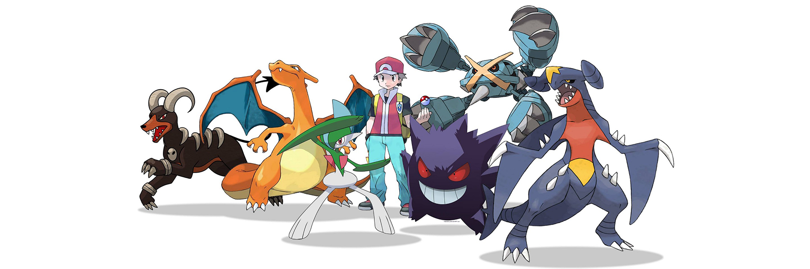
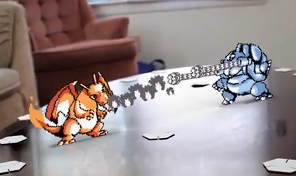
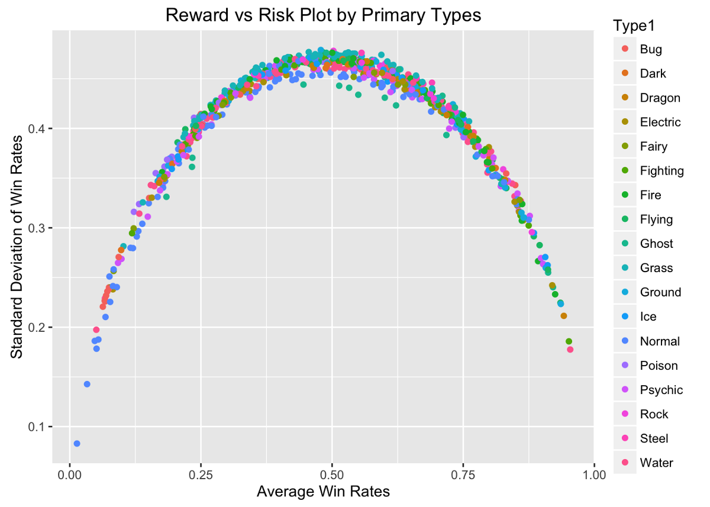
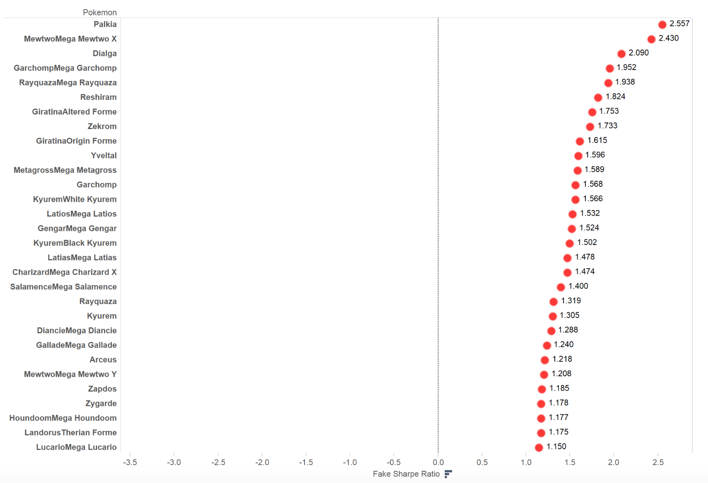

Sample project

Now is a great time to be a Pokémon fan. Pokémon Sun and Moon are expected to be release during the holiday season and Niantic’s Pokémon Go due some time later this year.
The time has come for us to answer one of the most important questions in life, the one that has brought about most heated discussions for elementary schoolers and grown-ups alike: What is the best Pokémon of all time?
But what’s best? Pikachu is undoubtedly the franchise’s most iconic Pokémon. Charizard is probably the most loved starter. Wailord is the biggest, Alakazam the smartest. Eevee has the most number of evolutions, and the list goes on.
But most would agree that when all is said and done, the most important aspect of a Pokémon is its battle prowess. We define the best Pokémon as:
A Pokemon that has the highest and most consistent chance of winning against any other Pokemon. The highest chance of winning is easily accommodated by the highest average win rate, while we incorporate consistency through
adjusting for standard deviation of win rates. For instance, compare a Pokémon that wins all of its battles 50% of times with a Pokémon that wins half of its battles 100% of times but loses the rest 100% of times.
Their average win rate is both 50% but we would rather have a more consistent Pokémon that is the former.

We scraped the data from the Pokémon Database including all Pokémons from Generation I to Generation VI including their mega, primal and other known special forms — all 800 of them.
Then we did the most logical thing any Pokémon trainer would: pit all of them against one another in a series of virtual death matches.※
It looks like this:
Generation VI rules; Level 100; Full EVs and IVs; Stage 1 critical (6.25%); STAB
Charizard has more speed. It attacks first.
Charizard attacked for 149.953594365055.
Blastoise attacked for 302.743443060293.
Charizard attacked for 145.676545584109.
Blastoise attacked for 266.82468669878.
Blastoise wins at HP 84.800473199627.
We did 100 of battles for each pairing of Pokémons, and derived the average win rate and standard deviation of win rates for each Pokémon.

If you are familiar with portfolio theory you would notice something is not quite right. Instead of the traditional concave shape of the reward-risk curve, this particular reward-risk curve for
Pokémon battles is convex. It means that that up to about 50% average win rate, the better reward (win rate) you seek the more risk you must shoulder. But afterwards, the better reward actually comes with less risk.

Too long, didn’t read: the best Pokémon is so OP it is not only the strongest but the most consistent.
When the dust settles, we calculated variance-adjusted average win rate for each of the Pokémon.※※ And rank all 800 forms of Pokémons as follows:
For a full list see here
So next time a wild Pokémon trainer challenges you to a one-on-one Pokémon battle and you don’t know what she has, you know that your best and most consistent chance of winning is to choose Palkia.
PS. Props to Garchomp and Metagross (in their mega forms) for breaking into the top ten full of legendaries. Here’s a team of best non-legendaries:
※ The simulation is based on Generation IV rules with all Pokémons assumed to have full IVs and EVs at level 100. Both of them take turn, not unlike in the game, attacking each other with STAB,
physical or special moves of their primary or secondary type on each other, depending on which does more damage, and the first Pokémon to reach 0 HP is said to have lost the round.
The moves is assumed to have average power and accuracy (75.06 and 95.24% respectively), assuming Stage 1 critical rate. No nature or ability is taken into account. Since we only allow moves that share a type with the Pokémon,
when two Pokémon that cannot damage each other type-wise such as Rattata (Normal) and Misdreavus (Ghost), we assume a draw. For more information see here.
※※ This is to incorporate consistency into the win rate in the tradition of the Sharpe ratio often employed in portfolio analysis. For more information see here.